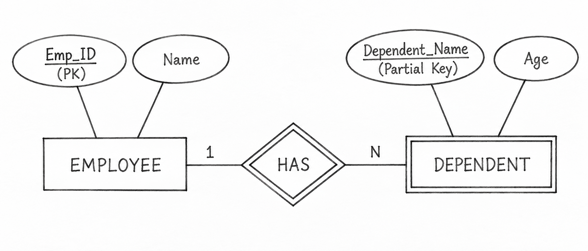

Q25. Explain Weak Entity Sets, Codd's Rules, and Relational Schemas with Suitable Examples.
1. Weak Entity Sets
A Weak Entity Set is an entity that cannot be uniquely identified by its own attributes. It depends on a Strong Entity Set.
Characteristics
- It does not have a complete Primary Key of its own.
- It depends on a strong entity for identification.
- It is represented by a double rectangle in an ER diagram.
Example
Consider an EMPLOYEE and their DEPENDENT.
- EMPLOYEE: Emp_ID (Primary Key), Name.
- DEPENDENT: Dependent_Name, Age.
EMPLOYEE is the strong entity, and DEPENDENT is the weak entity.
Diagram: Weak Entity Set

2. Codd's Rules
Codd's Rules were introduced by E. F. Codd to define the requirements of a Relational Database Management System (RDBMS).
There are 13 rules, numbered from Rule 0 to Rule 12.
| Rule | Name | Explanation |
|---|---|---|
| 0 | Foundation Rule | The system must manage data using relational methods. |
| 1 | Information Rule | All data must be stored in tables. |
| 2 | Guaranteed Access Rule | Every data value must be accessible using table name, Primary Key, and column name. |
| 3 | Systematic Treatment of NULL | NULL values must be handled consistently. |
| 4 | Dynamic Online Catalog | Database information must be stored in tables and accessible through the database language. |
| 5 | Comprehensive Data Sublanguage | The system must support a language such as SQL for database operations. |
| 6 | View Updating Rule | Views that can logically be updated should support updates. |
| 7 | High-Level Insert, Update, Delete | The system must support operations on multiple rows at once. |
| 8 | Physical Data Independence | Changes in physical storage should not affect applications. |
| 9 | Logical Data Independence | Changes in logical structure should not affect applications where possible. |
| 10 | Integrity Independence | Integrity constraints must be defined and stored in the database. |
| 11 | Distribution Independence | Users should not need to know whether data is stored at different locations. |
| 12 | Non-Subversion Rule | Low-level access must not bypass integrity rules. |
3. Relational Schemas
A Relational Schema defines the structure of a table, including its name, attributes, Primary Key, and Foreign Keys.
Example: Student and Department Database
Keys
- DEPARTMENT: Dept_ID is the Primary Key.
- STUDENT: Student_ID is the Primary Key.
-
STUDENT:
Dept_ID is a Foreign Key referencing
DEPARTMENT(Dept_ID).
Relationship
One department can have many students, but each student belongs to one department. This represents a One-to-Many (1:N) relationship.